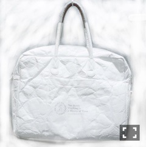

| 2016/10 15 Sat | 斎藤ちはる 〇〇な秋。(´>∀<｀)ゝ |
ちはるーむへようこそ！
読書の秋！
ということで読んでます。
小説ではなく、漫画ですが！
荒川アンダーザブリッジ！
今更ですが、ハマってます◎
村長の中身が知りたい私です。
カバーが外されているのは
TSUTAYAで借りてきているから。
沢山読みたいけど
全部買ってたらキリがないので
TSUTAYAによくお世話になってますd(￣ ￣)
10冊以上だと安くなるので
いつもまとめて読んでしまう！
でも今回は読みきれなかったので
延長中(o_o)！
読んでいるとついつい声に出して
笑ってしまうので
いつも母に驚かれる。。
だって面白いんだもん。。笑
「聖☆おにいさん」も読みました◎
中村光さん作品、好き！！
皆さんはこの"読書の秋"に
何か読んでいますか？
-------------------------♡
#chihaOOTD
今までの #chihaOOTDは
女の子向けだったけど、
今日は男女共に使える鞄を紹介します！

リュウドさんのTHINK AEROシリーズ！
驚きの軽さと、
使いやすさ。
紙のような質感の
今までになかった触り心地で
しかも耐水性なので雨でも平気。
機能性の高いバッグなので
母と兼用で使ってます◎
シンプルなので、
チャーム等を付けても可愛いかも！
ファッションの秋。
ぜひ参考にしてください〜♪
-------------------------♡
♬ ChihaMusic
「恋」星野源さん
最近話題のこの曲！
イントロの何か始まりそうな
アジアンな不思議な感じと
覚えやすい歌いたくなる、
キャッチーさが好き。
"胸の中にあるもの いつか見えなくなるもの
それは側にいること いつも思い出して"
胸の中に秘める想いを
忘れず見失わず思い出しながら。
ラスサビの高揚感もとても好き！
ワクワクする。
この髪型をしても
似合う、可愛いまあや\( ˆ ˆ )/
まあやに会いたいな〜
おやすみ！
斎藤ちはる